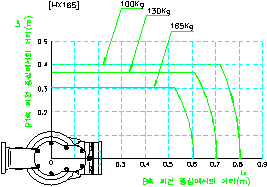
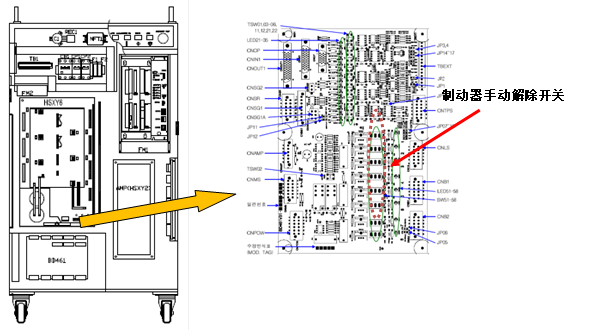
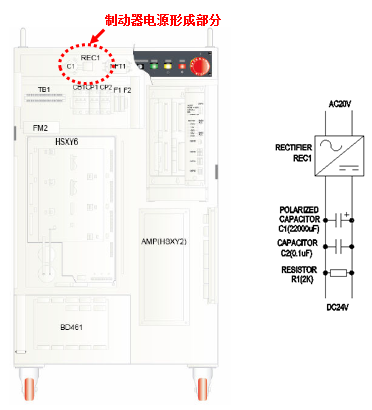
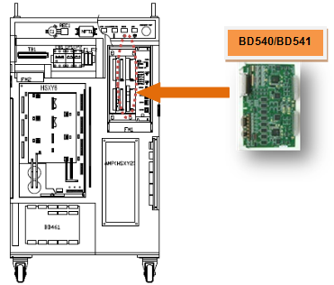
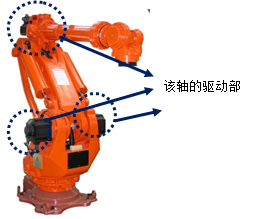

马达或驱动装置过载（超负荷）。如果马达或驱动装置在超出连续使用条件的情况下过度工作，会出现过热且造成使用寿命大幅缩减，所以伺服板检测错误并停止机器人。
|
1. 请放宽负荷条件
2. 请检查机器人工作中是否有冲突因素。
3. 请确认轴制动器是否正常运行。
4. 请更换伺服板并确认是否有异常。
5. 请确认驱动部是否正常运行。 |
1. 请放宽负荷条件
如果机器人正常运行一会后出现超负荷错误，请首先检查是负荷条件的问题，还是虽然负荷条件正常但控制器或机器人本体上出现了问题。请按照下述方法放宽机器人使用条件，检查超负荷错误是否得以解决。
在减轻工具负荷重量的状态下检查
延长机器人待机时间或者减慢机器人速度后确认
若放宽负荷条件也仍继续出现超负荷错误，则需检查控制器或机器人本体是否有问题。
对于机器人负荷来讲，不仅工具重量很重要，而且惯量的大小也很重要，各机器人的允许惯量请参考各个机器人的维修说明书。下面是 HX165 机器人的例子。

图 5.62 HX165 机器人手腕轴允许惯量
2. 请检查机器人工作中是否有冲突因素。
请确认机器人工作区域是否有与机器人干涉或冲突的部分。机器人与其它结构物产生干涉时会发生此错误。此时应修改作业程序以免产生干涉。
3. 请确认轴制动器是否正常工作。
可能因该轴制动器的解除功能有问题或制动解除电压异常所致。
1) 检查个别轴制动器的解除异常。
拆除马达电源后(马达OFF)，用手动制动开关来确认该轴的制动器是否正常解除。解除制动器时，可通过从马达发出的声音来确认。

2) 检查制动器用电源是否有异常。
如果发生“E0012制动器电源异常”信息，这就表示制动器电源装置有异常。
在控制器上端有电容和整流器，由20V的电源生成DC24V电源。请用测试仪来检查DC24V是否正常生成。

4. 请更换伺服板后确认是否有异常。
更换伺服马达后，若不发生错误，这就表示伺服马达的不良。请把伺服马达更换为正常品。

5. 请确认驱动部是否正常运行。
请确认该轴的驱动部(马达、减速器)是否正常运行。
